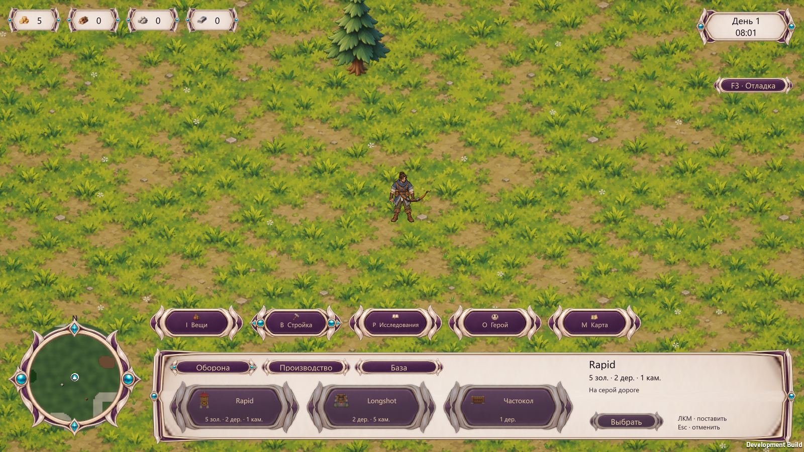
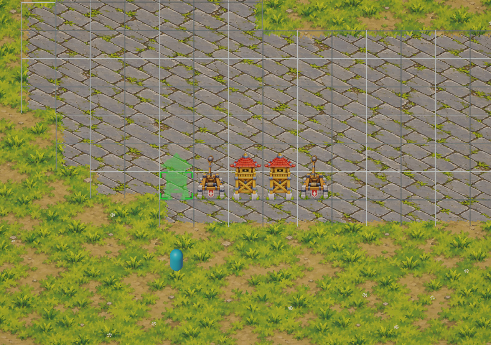

01 / ИССЛЕДОВАТЬ
Мир и ресурсы
Найти дерево, камень, металл и дальний круг телепортации.
Изометрическая tower defense с выживанием в огромном мире и развитием базы. Герой добывает ресурсы, строит и автоматически стреляет из стартового лука; башни защищают синий трон, а частокол меняет маршрут врагов.
RimWorld и Factorio — ориентиры мира и хозяйства. Текущая карта 250×250 и цикл двадцатиминутной подготовки с ночными ордами служат прототипом. Точный размер большого мира и минимальный коммерческий состав ещё открыты. Windows/Steam — целевая платформа.
Оборонительная дорога занимает нижний левый район карты 250×250; зелёный мир для исследования растёт вправо и вверх. Красный портал выпускает врагов, синий трон — цель обороны. Боевые башни строятся на серой дороге; мастерская — на свободной зелёной земле, генераторы — на своих ресурсных площадках.

Фактический кадр Windows Interface V4, 18.10.2026. B заменяет нижнюю панель строительством. Мастерская и жилище находятся в категории «База» и не появляются готовыми в начале.
Исследование мира, добыча и развитие базы конкурируют со временем подготовки к обороне. Возврат после поражения принят как целевой контракт и ещё не реализован.
Найти дерево, камень, металл и дальний круг телепортации.
Строить генераторы, мастерскую и оборону на разрешённых местах.
Ночью герой и башни отбивают орду. Частокол меняет путь без атаки. Полное перекрытие вызывает осаду.
После зачистки сохранить постройки и ресурсы и получить полную подготовку. Орды продолжаются с ростом силы; наложения нет.
Цель D-062: вернуть состояние перед проигранной волной и полный таймер подготовки. Пока работает полный ResetRun.
Stage 2 принят; Stage 3 gate остаётся открытым. Windows Interface V4 собрана и запущена; последние целевые PlayMode — 16/16. Astra проверила UI на 1280×720, 1600×900 и 1920×1080. Пинч проверен синтетическим вводом; физический тач и отдельный кадр pressed не проверялись.
Контракты: мастерская · круги · день и ночь · интерфейс · текущая проверка 16/16.
Фиксированная изометрическая камера, мягкий мультяшный вид, рисованные спрайты и общая поверхность. Во время размещения башни вся разрешённая серая зона разбита сеткой; ширина башни и нижняя опора вписаны в клетку.

Rapid и Longshot используют новые согласованные направления; preview и готовая башня имеют одинаковую опору. Колесо мыши или жест Mac меняет масштаб, WASD не меняет зум. Векторная сетка включается при выборе башни.
Выживание в большом мире — основа продукта по D-062. Конкретные дополнительные системы и минимальный объём ещё выбираются; текущий играбельный прототип не закрывает этот вопрос.
Лучи света переходят в полностью белый экран. «Повторить» восстанавливает мир, героя, ресурсы и постройки непосредственно перед стартом проигранной волны и даёт полный штатный период подготовки — при ручном и автоматическом старте. Попытки не ограничены.
Runtime пока отсутствует. Нынешний ResetRun начинает весь забег заново; будущий снимок должен учитывать постройки, жилище, производство, исследования, обнаружение круга и WorldMinutes.
Следующий этап определяется каноническим планом и принятыми решениями D-062–D-068. Stage 3 gate открыт.
Открыть план разработки →